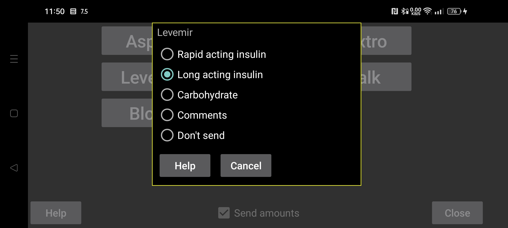

ar be de es fa fr hi it ja ko nl pl pt ru tr uk uz zh en
مانند LibreView، در وبسرور Nightscout داخلی Juggluco نیز میتوان تعیین کرد مقدارهای ثبتشده با هر برچسب چگونه نمایش داده شوند.
مشخص کنید مقدارهایی که در Juggluco با یک برچسب خاص ثبت شدهاند، با کدام دسته به LibreView ارسال شوند. میتوانید چند برچسب متفاوت Juggluco را به یک دستهٔ LibreView نگاشت کنید؛ مثلاً «کربوهیدرات غذا» و «گلوکز خالص» هر دو بهعنوان «کربوهیدرات» فرستاده شوند.
برای کربوهیدرات، میتوان مقدار ثبتشده در Juggluco را در عددی ضرب کرد تا واحد به گرم تبدیل شود. مثلاً اگر یک واحد ثبتشده معادل ۱۰ گرم است، ضریب ۱۰ را وارد کنید.
«یادداشتها» یعنی مقدار بهشکل یادداشت LibreLink به LibreView فرستاده شود. متن یادداشت از نام برچسب و عدد ساخته میشود؛ مثلاً اگر برچسب «دوچرخ» و مقدار ۵۰ باشد، «دوچرخ ۵۰» در نمودار «دفتر ثبت روزانه» LibreView در زمان مربوط دیده میشود.